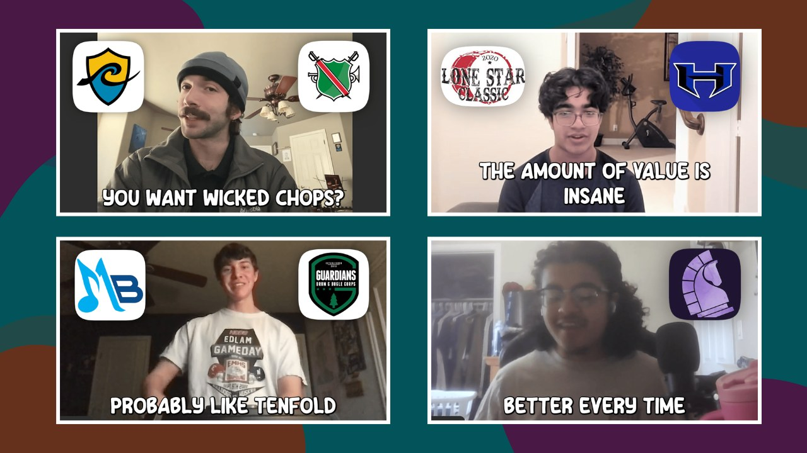

You'll get text and email reminders before the meeting, and the Google Calendar invite is on its way to your inbox.
At minimum, finish the training below before your call. Recommended: watch at 1.2x speed.
Don't skim it. If a parent is joining you on the call, watch it together so you're both on the same page.
Finding the right mentor can be the turning point in your drumming career. If you've been searching for someone who truly understands how to help you improve and will MAKE SURE you know how to reach your goals, this is it.
Don't think of the cost, think of the OUTCOME you will receive from investing in yourself.
Think long-term. Think like a successful artist, not just someone who "wishes" they would've tried.
I look forward to speaking with you.
Anthony
This is what's possible for you.

The goal of this call is to understand where your drummer is now, where they want to be, and which way of working together gets them there. Come with your questions and ask me anything.
Need to reschedule? Use the link in your confirmation email, or reach me at anthony@rudimentaldrummingmastery.com. See you soon. Anthony